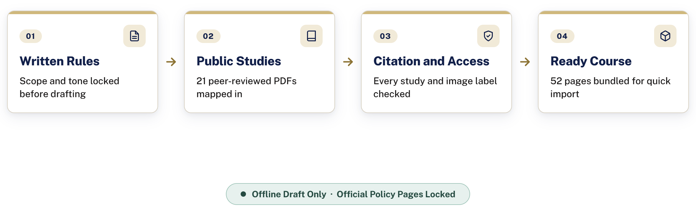
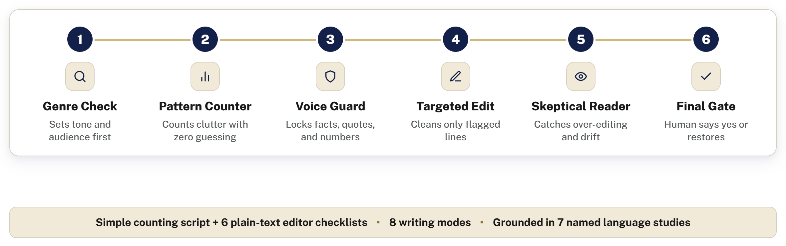
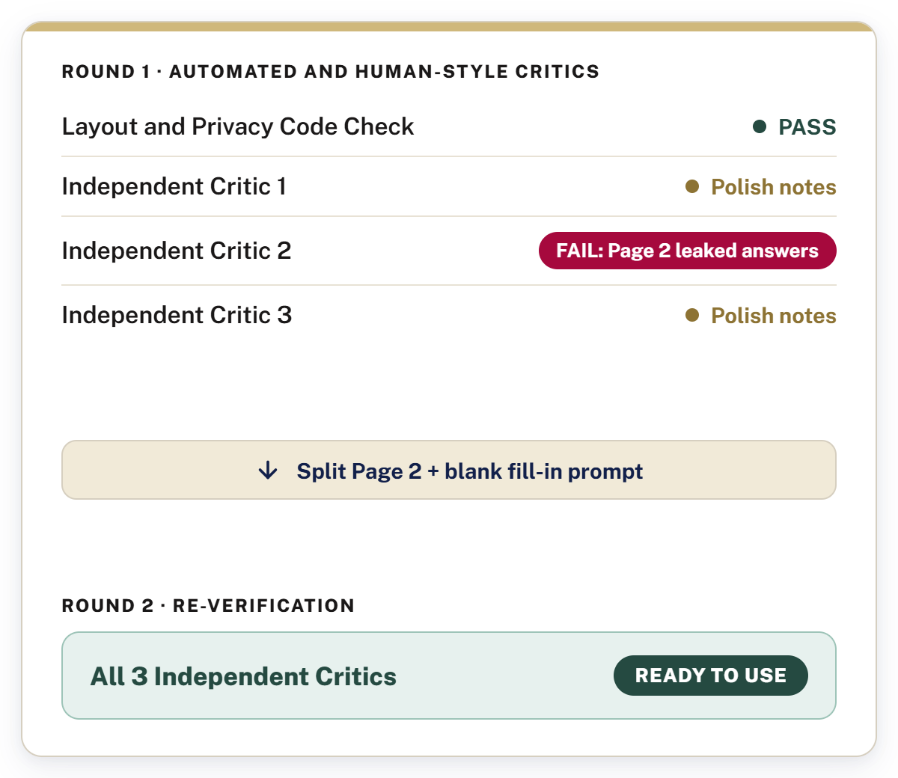
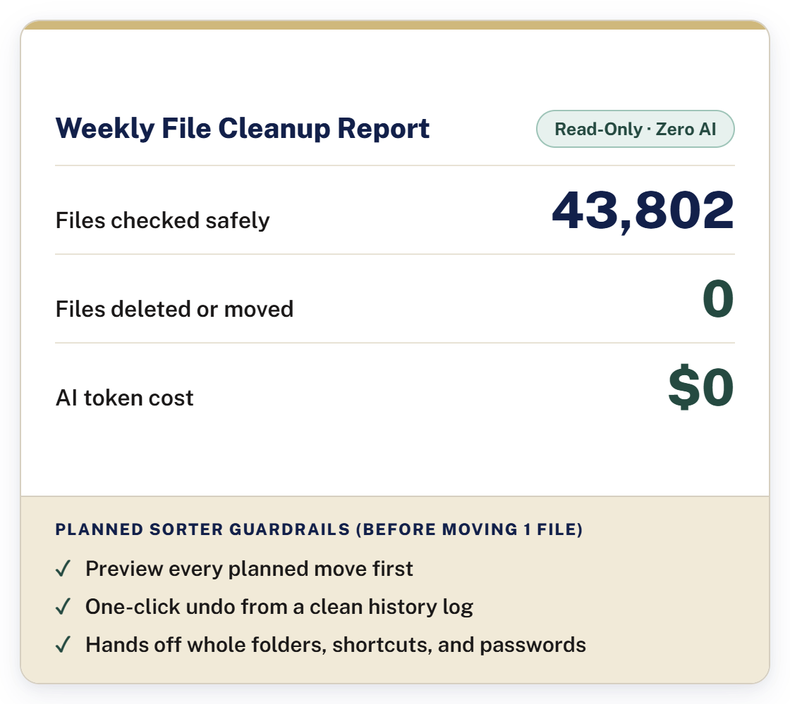

Educational Initiatives & Interactive Curriculum Lab
How I translate statutory mandates (Title VI, Title VII, Title IX, ADA, PWFA, FMLA/FAMLI, Clery/VAWA) and peer-reviewed prevention science into trauma-informed, WCAG 2.2 AA accessible curricula, tabletop behavioral simulations, and psychometrically paired pre/post evaluations across student services, academic medicine, graduate public health, and AI literacy workshops.
Interactive Slide Deck Showcase
Select an educational initiative to step through approved visual slides, facilitator talking points, and accessibility/evidence notes.
Tip: Use Left / Right arrow keys when viewing slides.
Student Services · Day 1
Why Workplace Norms Matter
Instructional Purpose & Timing
Facilitator Talking Points
Accessibility & Evidence Guardrails
Learning Objectives & Pre/Post Evaluation Matrix
Curriculum alignment linking Bloom’s Taxonomy objectives, matched pre/post items (Wilcoxon signed-rank / Cohen’s d), and the CDC 6-Step evaluation framework.
Pre/Post Construct Pairing & Anonymous SGIC Method
Select a psychometric construct to inspect matched baseline/summative survey items and why anonymous Self-Generated Identification Codes (SGIC) replace superficial satisfaction polls.
Interactive Activity Materials & Tabletop Simulator
Rehearse bystander intervention and systemic reporting routes without canned scripts. Ground rules: practice space only; 4 of the 5 Ds are indirect by design.
Choose a Sanitized Tabletop Scenario Card
Four Tabletop Seats
Scene Script Up to Freeze
The Two-Rooms Switcher
Draft Your Own Words
Local browser onlyNo canned scripts are handed out in training; participants adapt phrasing to their own authentic voice.
An interrupted incident without a routed follow-up leaves the harmed colleague carrying the burden alone.
Peer Coaching Question Bank (Ask, Don’t Tell)
Select any coaching prompt to reveal its facilitation objective during the 90-second paired exchange.
Duty to Report: Private vs. Confidential
- Responsible Employees: Promptly route potential protected-class discrimination, harassment, sexual misconduct, or retaliation to the [Institutional Office of Equity].
- Honesty About Confidentiality: Supervisors and responsible employees operate privately, not legally confidentially. Explain what you can protect and share exact confidential options (e.g., Campus Ombuds, Employee Assistance Program, Confidential Victim Advocates).
- Standalone Supportive Measures: Accommodations, schedule adjustments, and no-contact directives remain available without requiring a formal disciplinary complaint.
Visual Pedagogical Models & Multi-Harness QA Architecture
Deterministic SVG diagrams designed for WCAG 2.2 AA contrast alongside the multi-agent quality assurance pipeline documented across Antigravity, Hermes Agent, Claude Code, Codex, and LM Studio Bionic sessions.
Deterministic Instructional SVG Diagrams (8 Models)
Multi-Harness Curriculum Engineering & Quality Gates

Stage-Gated Course Redesign (Respect Expected 3.0)
Separated written scope rules, 21 peer-reviewed PDFs, live Crossref/OpenAlex citation checks, and 52-page Common Cartridge (.imscc) packaging while keeping official statutory policy pages byte-locked.

6-Step Editorial Voice & Accuracy Guard
Combines deterministic text-pattern counting with 6 plain-text editorial gates across 8 communication modes so educational handouts keep human warmth without silently inflating hedged research claims.

Three-Critic Independent Audit Loop
Runs deterministic layout checks (18pt minimum slide body font, contrast, bounds) alongside 3 independent visual critics that caught participant handouts accidentally printing facilitator answers before distribution.

Knowing When to Skip AI ($0 Deterministic Hygiene)
Audits 43,802 local workspace files into a read-only Excel report with zero autonomous deletions and zero LLM token cost—reinforcing that deterministic scripts handle housekeeping while educators own judgment.